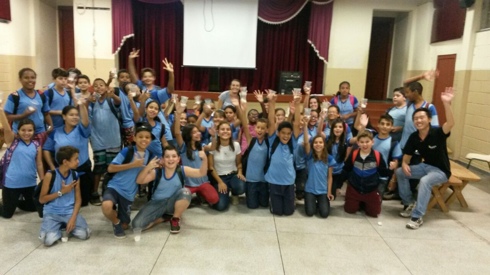
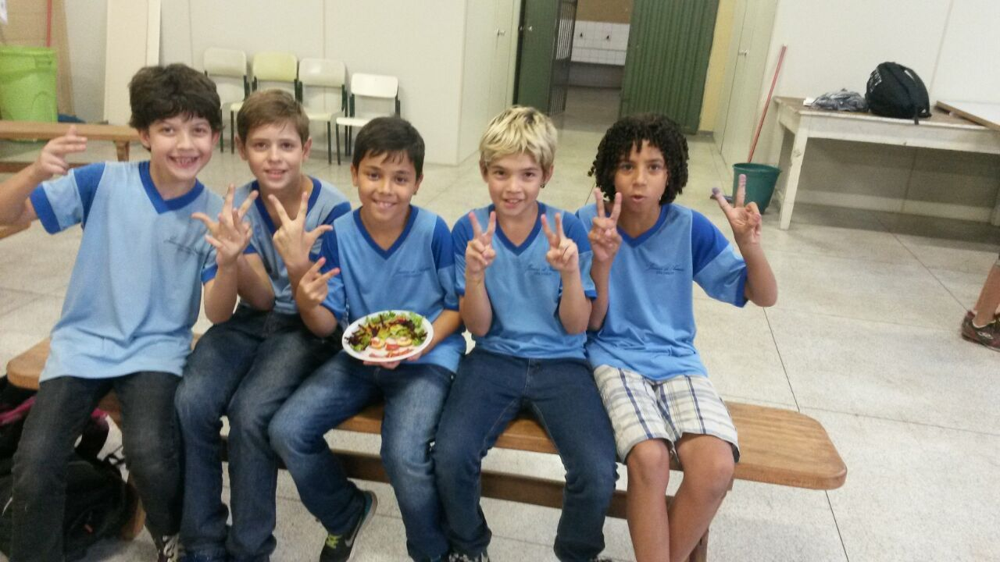

Próximo Passo
Desenvolvimento pessoal de alunos do ensino fundamental, resolvendo problemas reais da escola e do bairro.

- Escola
- E.E. Jesuíno de Arruda
- Público
- Ensino fundamental
- Foco
- Empatia, criatividade e liderança
- Área
- Educação
O projeto
Estudantes como agentes de mudança.
O projeto Próximo Passo trabalhou a promoção do desenvolvimento pessoal dos alunos do ensino fundamental da Escola Estadual Jesuíno de Arruda. O empoderamento dos estudantes se deu a partir de atividades ligadas principalmente a empatia, criatividade, trabalho em grupo e liderança.

Na prática
Ideias aplicadas na escola e no entorno.
As atividades também trazem impactos diretos para a comunidade, pois consistem na resolução de problemas da escola e do ambiente em torno dela, onde as crianças colocam em prática suas ideias e os conhecimentos absorvidos em sala de aula.

Esse projeto terminou. O impacto continua.
Conheça os projetos ativos do time e veja como acompanhar ou apoiar o que estamos construindo agora.